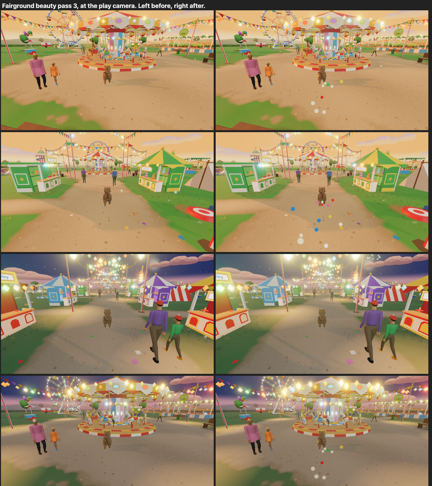

Left: before. Right: after (same page, tools/verify/verify-fair.html, with and without ?before). Rows: mid-reaction by day (a golden-hour walk), she runs past the merry-go-round and kicks up confetti and popcorn (the dust is tan where the ground is bare) while the bunting beside her flutters harder; mid-reaction on the midway; dusk, with a firework bursting high over the right of the fair and the bulbs beside her swelling; dusk mid-run. Not visible in a still: the lit bulbs flare on each calliope note and breathe slowly, steam wisps climb from the candyfloss and popcorn stalls, a firework goes off every 13 s at dusk, a ride bell rings as she comes to the merry-go-round, and a soft whoosh of air goes by as she passes a ride; it is a little louder and brighter at dusk. Reduced motion draws and moves none of it; the lite rung draws fewer bits and no firework.
